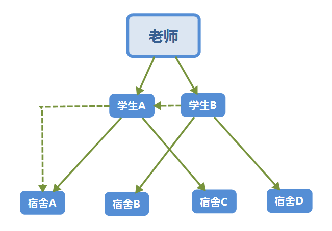

黑幕！黑色的明天等待着我们
考试前一天晚上，所有人都知道了考试题目……
大学，期末考试，某门课，考试前一天晚上，很多（几乎所有）人，都知道了第二天考试要考的，80%（以上）的试题，
一字不差的那种。
试题的流传过程是这样的。
背景，学生A和学生B都是宿舍A的。
背景，学生A和学生B对试题的传播几乎没有过交流。
老师同时把题给了学生A和学生B，然后人情社会，利益相关，
学生A把题告诉了宿舍A（也就是自己宿舍）和宿舍C（平时玩的比较好），
学生B把题告诉了宿舍B（可能玩的比较好）和宿舍D（其实这里稍有误）。

图中虚线表示学生A和学生B都是宿舍A的，实线表示试题的流传过程。
泄题本身很难判断对错。
学生A的成绩差，老师一片好心。
学生B是班长，（脑补原因）。
噢对，学生A是老师的助理。（所以老师才会关心他的成绩差，而不是别人。成绩差也是能当助理的）
对于成绩差的学生A，我们丝毫不介意甚至迫切希望老师泄题给他，因为我们也不希望他挂科。（好吧一个宿舍的）
然后从结果上看，老师泄题，我们几乎所有人（起码我）得知了第二天要考的题目。
我们平时还盼着老师给划个重点，现在真题都有了，难不成还站在道德的制高点说泄题的行为是错误的？
当然不可以，但直接出来那么多真题确实有点怀疑人生。
原来人情，连这种违反规定的事情，都可以解决。
但是同样从人情的角度看，老师背着违反规定的风险泄题给你，想让你不挂科，给你个机会，这是老师在做好。
对我们有利，所以我们不能（也不会）说它是错的。
不过如果我们（我）不是受益者，可能我就会改变说法。
泄题的过程才让人感慨。（泄不泄题和我没太大关系，对成绩影响不大）
全班几十个学生，老师只告诉了两个人，其中没有你，你伤不伤？
学生A只告诉了宿舍A和宿舍C，那么宿舍B和宿舍D的，你伤不伤？
同理，学生B只告诉了宿舍B和宿舍D的，尤其，连它自己的宿舍A都没告诉，你伤不伤？
问题是，资源在人家手里，想给谁给谁。
尴尬的是，最后，几乎所有人都知道了。
宿舍B的人跑到宿舍A，咦，你这题哪儿来的？
宿舍A黑人问号脸，咦，怎么，你知道？
哈哈哈哈哈哈哈哈
谁都能理解，谁都不想理解。
面对资源，部分人性可以显露。
所以石油才会引发大国之间的战争？《文明6》里面加成资源算是很值钱的东西，像牛羊马，鹿，鱼，或者战略资源，石油，铀，硝石。
问：好人是从什么时候开始变坏的？
答：觉得不公平的时候。
可是 (公平!=公正)==true
社会我社会
我等身与名俱灭，不废长江万古流啊